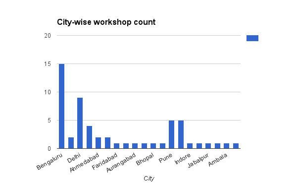
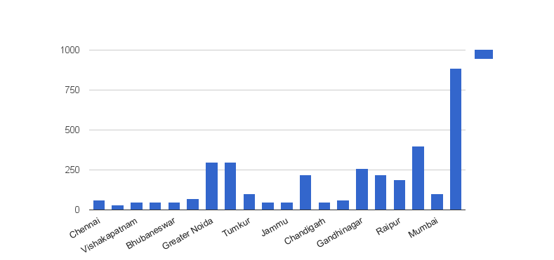

Grand Show
Python Month started on August, 10th and ended on September, 10th, completing 56 workshops across India covering 11 states! Awesome @pythonexpress poster made by students. Thank you CSMSS student for awesome response@pyconindia @ciypro pic.twitter.com/Rmh7isoDmv
— suraj narwade (@red_suraj) September 10, 2016
The workshops are few hours, whole day sessions. The untiring volunteers conducted workshops in twenty cities. The Bengaluru topped the chart by hosting 15 workshops, followed by Delhi with nine workshops. The smaller cities like Raipur hosted four workshops.

Nearly 3500 students participated in the workshops!
 We thank all the volunteers for their assistance, support, promotion. The above achievement is only possible with the strong volunteer support at various level. We welcome all sort of volunteering efforts. Big kudos to everyone of who were part of the process; who spread awareness; who connected the colleges, tutors, software development team and non-teaching volunteers.my first blog. https://t.co/qzRATyMo5h
— Shashank Aryan (@arlok31) August 28, 2016
thanks @PyDelhi @pyconindia @pythonexpress pic.twitter.com/QbGhbECDkq
There are 23 upcoming workshops in next one month. Keep the ball rolling!